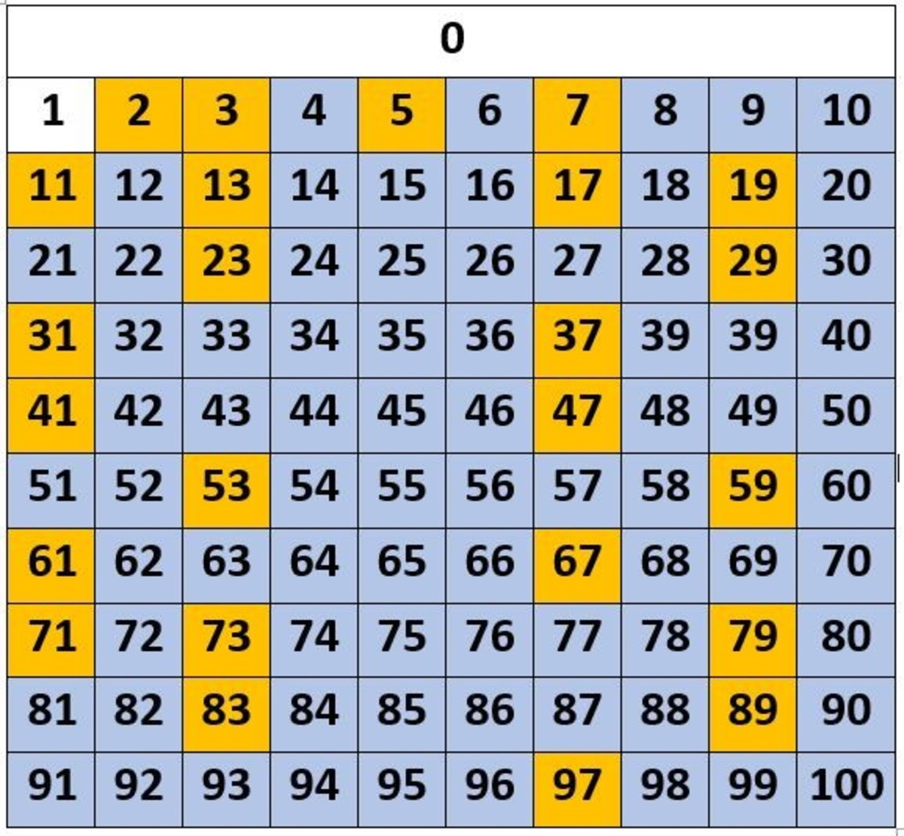

Los números primos son aquellos que solo son divisibles entre ellos mismos y el 1, es decir, que si intentamos dividirlos por cualquier otro número, el resultado no es entero. Dicho de otra forma, si haces la división por cualquier número que no sea 1 o él mismo, se obtiene un resto distinto de cero.
Intenta dividir uno de los números remarcados por un numero que no sea 1 o el mismo numero.
